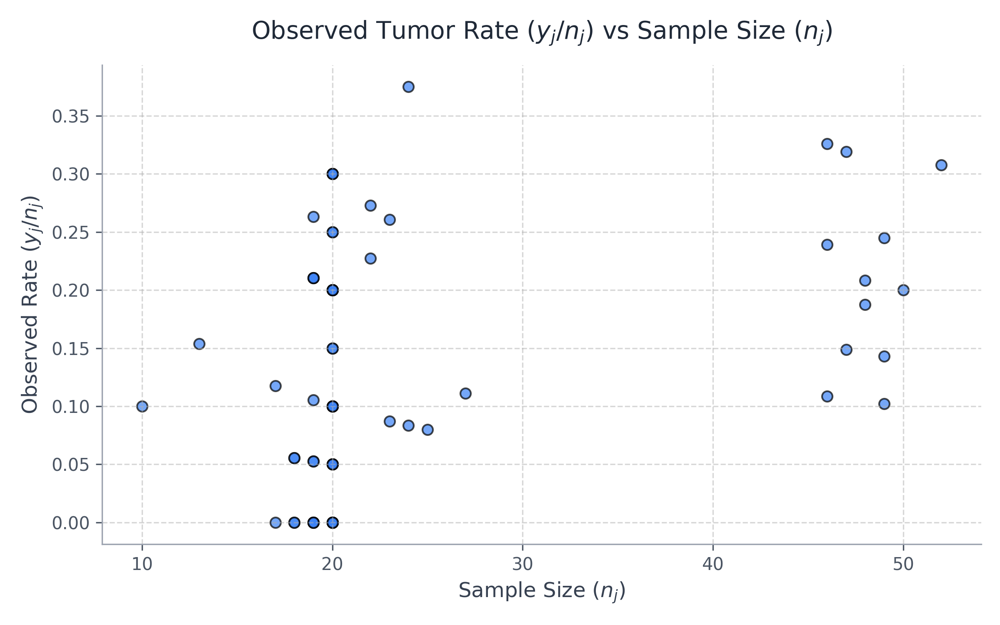

Generalizing from the rat tumor example, consider a set of \(J\) separate experiments, indexed as \(j = 1, 2, \dots, J\). For each experiment, we observe a data vector \(y_j\) that is modeled by a parameter vector \(\theta_j\) according to a likelihood function \(p(y_j \mid \theta_j)\).
It is common for the parameter vectors \(\theta_j\) to have overlapping or shared components across different experiments. For example, if each \(y_j\) is drawn from a normal distribution with a group-specific mean \(\mu_j\) but a common, shared standard deviation \(\sigma\), then the parameter vector for the \(j\)-th experiment would be defined as \(\theta_j = (\mu_j, \sigma^2)\).
To build a joint probability model for the entire set of parameters \(\theta = (\theta_1, \dots, \theta_J)\), we rely on a critical foundational concept in Bayesian statistics: exchangeability.
A set of parameters \(\theta_1, \dots, \theta_J\) is said to be exchangeable if our prior beliefs about them are invariant to permutations of their indices. Mathematically, their joint prior distribution satisfies:
for any permutation \(\pi\) of \((1, \dots, J)\).
When no information—other than the observed data \(y\)—is available to distinguish any parameter \(\theta_j\) from any other, and no meaningful ordering or grouping of the parameters exists, we must assume symmetry among the parameters in their prior distribution. In Bayesian statistics, this symmetry is expressed probabilistically through the concept of exchangeability. Formally, the parameters \((\theta_1, \dots, \theta_J)\) are exchangeable if their joint prior probability distribution, \(p(\theta_1, \dots, \theta_J)\), is invariant to any permutation of the parameter indices.
For example, in our rat tumor analysis, suppose we have no means to distinguish between the 71 separate experiments other than their respective sample sizes, \(n_j\). If we assume that the sample size \(n_j\) provides no information about the underlying tumor risk \(\theta_j\)—that is, the true probability of a tumor is unrelated to how many rats the researchers chose to place in the control group—then we cannot meaningfully order or group the experiments prior to analyzing the data. Consequently, we must employ an exchangeable model for the parameters \(\theta_1, \dots, \theta_{71}\).
1. Why does the assumption of exchangeability require that we have no prior information distinguishing the parameters?
2. If we knew that experiments 1-10 used male rats and 11-20 used female rats, are the parameters \(\theta_1, \dots, \theta_{20}\) fully exchangeable?
3. How does the concept of exchangeability differ from the assumption of independence?
In practice, ignorance implies exchangeability. Generally, the less we know about a problem, the more confidently we can invoke the assumption of exchangeability. (However, as a statistician, this is certainly not a valid excuse to avoid learning more about a problem before analyzing the data!)
Consider the classic example of rolling a die. Initially, we assign equal probability to all six outcomes. Because we have no distinguishing information about any specific face of the die, our prior beliefs about the probabilities \(\theta_1, \dots, \theta_6\) are perfectly symmetric. Any permutation of these parameters has the exact same joint probability.
But suppose we carefully measure and weigh the die, discovering that the side with the "6" is physically heavier. Because the heavy side is more likely to land face down, we now have strong physical reasons to favor the outcome "1" (the opposite face) over the outcome "6". We can no longer arbitrarily swap \(\theta_1\) and \(\theta_6\) in our joint probability distribution without changing our prior belief. The introduction of specific, distinguishing knowledge has fundamentally broken the symmetry, thereby eliminating exchangeability.
1. Based on the die example, what is the core paradox of exchangeability in statistical modeling?
In practice, the simplest and most universally applied form of an exchangeable distribution models each individual parameter \(\theta_j\) as an independent sample drawn from a shared prior (or population) distribution. This shared population distribution is, in turn, governed by some unknown hyperparameter vector, \(\phi\).
If we magically knew the true value of \(\phi\), the parameters would be conditionally independent. The joint probability of all the parameters, given \(\phi\), is simply the product of their individual probabilities:
However, in the real world, the population hyperparameter \(\phi\) is fundamentally unknown. To construct the true joint prior distribution for \(\theta\) before seeing any data, we must average over our uncertainty regarding \(\phi\). We achieve this by integrating the conditionally independent distributions over all possible values of \(\phi\), weighted by our prior belief about \(\phi\) itself (\(p(\phi)\)):
This powerful mathematical structure—a mixture of independent identical distributions (i.i.d.)—is De Finetti's theorem in action. For almost all applied Bayesian work, this mixture formulation is all we need to mathematically capture the concept of exchangeability.
1. According to the mixture distribution formula, what happens to the parameters \(\theta_1, \dots, \theta_J\) if we actually know the exact, true value of \(\phi\)?
The mathematical mixture we just constructed is a direct application of a foundational result known as de Finetti's Theorem. This theorem formally states that in the limit as the number of parameters \(J \rightarrow \infty\), any suitably well-behaved exchangeable distribution on \((\theta_1, \dots, \theta_J)\) can be expressed as a mixture of independent and identical distributions.
From a statistical modeling perspective, this mixture model characterizes the parameters \(\theta\) as being drawn from a shared, overarching "superpopulation." The shape and location of this superpopulation are determined entirely by the unknown hyperparameters, \(\phi\).
Interestingly, we are already quite familiar with exchangeable models. In standard likelihood functions, we almost always assume that our observed data points \(y_1, \dots, y_n\) are independent and identically distributed (i.i.d.) given some underlying parameter \(\theta\). De Finetti's theorem simply extends this exact same logical assumption from the data level up to the parameter level, creating the robust foundation needed for all hierarchical models.
As a simple counterexample demonstrating why de Finetti's theorem strictly specifies the limit as \(J \rightarrow \infty\), consider the probabilities of a given die landing on each of its six faces. If we know nothing about the physical weighting of the die, the probabilities \(\theta_1, \dots, \theta_6\) are perfectly exchangeable.
However, the six parameters are physically constrained to sum to exactly 1 (\(\sum \theta_j = 1\)). Because of this strict mathematical constraint, if we somehow learn the first five probabilities, we automatically know the sixth with absolute certainty. Therefore, they are fundamentally dependent and cannot be modeled as a mixture of conditionally independent identical distributions. This proves that while infinite exchangeable sequences can always be modeled as i.i.d. mixtures via de Finetti, finite exchangeable sequences (like the six faces of a die) sometimes cannot due to physical constraints.
The following thought experiment illustrates the critical role that exchangeability plays in drawing inferences from random sampling. For the sake of simplicity, we will use a nonhierarchical example where the exchangeability is applied at the level of the raw data observations (\(y_1, \dots, y_n\)) rather than at the level of the underlying parameters (\(\theta\)).
Suppose we randomly select eight states from the United States and record the divorce rate per 1,000 population in each state for the year 1981. We label these unknown rates \(y_1, \dots, y_8\). Without giving you any further information, we ask: What can you say about \(y_8\), the divorce rate in the eighth state?
Because you have been given absolutely no information to distinguish any one of the eight states from the others (you don't even know their names), you must model them exchangeably. You might choose to assign a vague prior distribution—perhaps a Beta distribution or a logit-normal—to the eight \(y_j\)'s, reflecting your general uncertainty about historical US divorce statistics.
Now, we reveal the actual data for seven of the randomly sampled states:
Given this new data, you can update your prior. A reasonable posterior predictive distribution for the remaining unseen value, \(y_8\), would likely be centered around 6.5, with the vast majority of its probability mass falling between 5.0 and 8.0.
The key insight here is the symmetry of the problem. Because the labels 1 through 8 carry no specific physical meaning, the joint distribution is completely invariant to permutation. If we randomly shuffled the labels and called the unknown state \(y_3\) instead of \(y_8\), your posterior predictive estimate would be completely mathematically identical.
Notice a crucial distinction here: while the \(y_j\)'s are exchangeable, they are not independent. Because we assume they are drawn from the same underlying US population, seeing the data from the first seven states heavily influences our prediction for the eighth state.
Now, suppose we give you additional prior information: the eight states are specifically the Mountain states (Arizona, Colorado, Idaho, Montana, Nevada, New Mexico, Utah, and Wyoming). However, we still do not tell you which observed rate corresponds to which state; the index labels remain randomly scrambled.
Before seeing any data, the eight divorce rates must still be modeled exchangeably because you cannot link any specific index to a specific state. However, your prior distribution itself should change dramatically. You might reasonably expect Utah (with a large Mormon population) to have a much lower divorce rate, and Nevada (with liberal divorce laws) to have a much higher rate. Anticipating these extreme outliers, you should assign a prior distribution with much wider, heavier tails.
When you are finally shown the tightly clustered seven observed values (5.8, 6.6, 7.8, 5.6, 7.0, 7.1, 5.4), a logical inference emerges. It is highly probable that this clustered data represents the "normal" states, meaning the missing eighth state is likely one of the extreme outliers (either Nevada or Utah).
Consequently, your posterior predictive distribution for \(y_8\) would no longer be a simple bell curve centered at 6.5. It would likely become bimodal (having two peaks)—one peak significantly lower than 5.4 (representing the possibility it is Utah) and one peak significantly higher than 7.8 (representing the possibility it is Nevada). Yet, despite this complex, multi-modal posterior, the parameters remain perfectly exchangeable because you still lack the information to definitively link an index number to a state name.
Finally, suppose we explicitly tell you that the single unobserved state (corresponding to the index \(y_8\)) is Nevada.
Now, even before seeing the seven observed values, you cannot assign an exchangeable prior distribution to the set of eight divorce rates. Why? Because you now have specific information that distinguishes \(y_8\) from the other seven numbers—specifically, your strong prior suspicion that Nevada's rate will be significantly larger than the rest. The symmetry is broken.
Once the data for \(y_1, \dots, y_7\) has been observed, a reasonable posterior predictive distribution for \(y_8\) should have the vast majority of its probability mass located above the largest observed rate. Mathematically, the probability \(p(y_8 > \max(y_1, \dots, y_7) \mid y_1, \dots, y_7)\) should be exceptionally large.
(Incidentally, Nevada’s actual divorce rate in 1981 was 13.9 per 1,000 population—almost double the highest observed value in the sample!)
In real-world data analysis, we frequently possess additional information about the units we are observing. Often, this extra information breaks the perfect symmetry of full exchangeability. However, all is not lost! We can typically still leverage the powerful mathematics of exchangeability by using partial or conditional exchangeability.
If observations can be logically categorized into distinct groups (e.g., separating the rat experiments into "tumor-prone" and "tumor-resistant" strains), the full set of observations is no longer exchangeable.
To solve this, we construct a hierarchical model where each group has its own specific sub-model. While the individual observations across different groups are not exchangeable, the observations within a specific group are exchangeable. Furthermore, if we assume the unknown properties of the groups themselves are symmetric, we can treat the group properties as exchangeable, drawing them from a shared higher-level prior distribution.
Application: In our rat tumor analysis, the \(y_j\)'s were initially exchangeable because no additional knowledge was available regarding the experimental conditions. However, if we later discovered that specific batches of experiments were conducted in different laboratories, we would assume partial exchangeability. We would construct a two-level hierarchical model to account for variation within each laboratory, as well as variation between the laboratories.
If an observation \(y_i\) is accompanied by additional covariate information \(x_i\) (e.g., measuring a rat's weight or age alongside its tumor outcome), the raw \(y_i\)'s alone are no longer exchangeable because the covariates physically distinguish them.
However, the joint pairs \((y_i, x_i)\) may still be exchangeable. In this case, we can build a joint model for \((y_i, x_i)\), or more commonly, we construct a conditional model for \(y_i \mid x_i\) (such as a standard regression model). By conditioning the outcome on the known covariate, we restore mathematical exchangeability to the residual variation.
Application: Returning to the divorce rate problem, suppose we also knew \(x_j\), the divorce rate in state \(j\) from the previous year, but still didn't know which index corresponded to which state. We can clearly distinguish the eight values of \(y_j\) based on their history, but the joint prior distribution \(p(x_j, y_j)\) remains the same for each state. For states having the exact same historical rate \(x_j\), we could use grouping (partial exchangeability). But since \(x_j\) can take many continuous values, it is much more practical to assume conditional exchangeability and use \(x_j\) as a covariate in a standard regression model.
In general, the mathematical way to model this conditional exchangeability with covariates is through conditional independence:
This equation reveals why exchangeable models are almost universally applicable. Even if every observation in the real world is entirely unique, we simply measure the factors that make them unique and encode them as the covariates \(x\). By pushing all the distinguishing, asymmetric information into the \(x\) and \(y\) variables, the residual variation becomes completely symmetric.
In our rat tumor example, we previously noted that the sample size \(n_j\) of each experiment is the only available information we have to distinguish the different experiments. Intuitively, it does not seem likely that the number of rats in a cage (\(n_j\)) would be a useful variable for modeling the biological tumor rate (\(\theta_j\)). However, if one were interested, we could create a conditionally exchangeable model for the \(J\) pairs of \((y_j, n_j)\).
A natural first step in exploratory data analysis would be to plot the observed tumor rates (\(y_j / n_j\)) against the sample sizes (\(n_j\)) to see if any obvious relationship exists that should be modeled. For example, perhaps some experiments had larger sample sizes because the investigators correctly suspected rarer events—that is, they suspected a smaller \(\theta_j\) and thus expected a smaller rate of \(y_j / n_j\), prompting them to use more rats to achieve statistical power.
If such a relationship existed, we would be forced to use \(n_j\) as a covariate. However, as the plot of the historical data below demonstrates, there is no apparent relationship between the two variables. The observed tumor rates are spread randomly across all sample sizes, validating our decision to model the parameters purely exchangeably without conditioning on \(n_j\).

Figure 2. Observed tumor rates (\(y_j / n_j\)) plotted against sample size (\(n_j\)) for the 70 historical experiments. The lack of a clear trend suggests \(n_j\) is not a necessary covariate.
In virtually any applied statistical problem, it is natural to instinctively object to exchangeability on the grounds that the physical units actually differ. For example, the 71 rat tumor experiments were performed at different times, on different individual rats, and presumably in different laboratories.
Such physical realities do not, however, invalidate mathematical exchangeability. The fact that the experiments differ implies that their underlying parameters, \(\theta_j\), differ. But it is perfectly mathematically sound to consider these varying \(\theta_j\)'s as if they were drawn from a common, overarching distribution. In fact, when we have no specific data available to distinguish the units mathematically, we have no logical choice but to model the \(\theta_j\)'s exchangeably.
Objecting to exchangeability because it models our ignorance is no more reasonable than:
As with regression analysis, the valid scientific concern is never about the concept of exchangeability itself. Rather, the valid concern is ensuring that we have diligently tried to discover and encode all relevant knowledge as explanatory covariates (\(x\)) wherever possible before retreating to pure exchangeability.
Returning to the fundamental problem of inference, the core distinguishing feature of a "hierarchical" model is that the population hyperparameter \(\phi\) is not known. Because it is unknown, it must have its own prior distribution, \(p(\phi)\).
Consequently, the appropriate Bayesian posterior distribution is no longer just about the unit parameters \(\theta\); it is about the joint vector of both the hyperparameters and the parameters: \((\phi, \theta)\).
The joint prior distribution is simply the product of the hyper-prior and the conditional population distribution:
And the full joint posterior distribution is calculated via Bayes' rule:
Notice the crucial mathematical simplification at the end: \(p(y \mid \phi, \theta)\) simplifies down to just \(p(y \mid \theta)\). This holds true because the data distribution depends only on the local parameters \(\theta\). The overarching hyperparameters \(\phi\) affect the data \(y\) only through \(\theta\).
Previously, in Section 5.1, we temporarily assumed \(\phi\) was known. While mathematically convenient, that assumption is generally unrealistic. By explicitly including the uncertainty in \(\phi\) via the hyper-prior \(p(\phi)\), we have completed the theoretical foundation for the full hierarchical model.
In order to create the joint probability distribution for \((\phi, \theta)\), we must assign a prior distribution specifically to the hyperparameter \(\phi\). If little is known about \(\phi\), we can assign a diffuse (noninformative) prior distribution. However, we must be extremely careful when using an improper prior density to verify that the resulting posterior distribution remains mathematically proper. Furthermore, we should assess whether our final conclusions are overly sensitive to this simplifying "diffuse" assumption.
In most real-world problems, one usually possesses enough substantive domain knowledge about \(\phi\) to at least constrain the hyperparameters into a finite, realistic region, even if a highly specific substantive hyperprior cannot be constructed. As is standard practice in nonhierarchical models, it is often practical to start with a simple, relatively noninformative prior distribution on \(\phi\), and then seek to add more informative prior constraints later if the resulting posterior distribution exhibits too much variation.
Returning to the rat tumor example, the overarching hyperparameters are \((\alpha, \beta)\). These two values completely determine the Beta population distribution from which all the local \(\theta_j\)'s are drawn. We will thoroughly illustrate one approach to constructing an appropriate hyperprior distribution for \((\alpha, \beta)\) as we continue that example in the next section.
Because hierarchical models are uniquely characterized by two levels of unknowns—the hyperparameters \(\phi\) and the local parameters \(\theta\)—there are actually two distinct types of posterior predictive distributions that might interest a data analyst:
Both types of posterior replications are invaluable for assessing model adequacy (a topic explored deeply in Chapter 6).
In the rat tumor framework, "future observations" can mean two entirely different things: